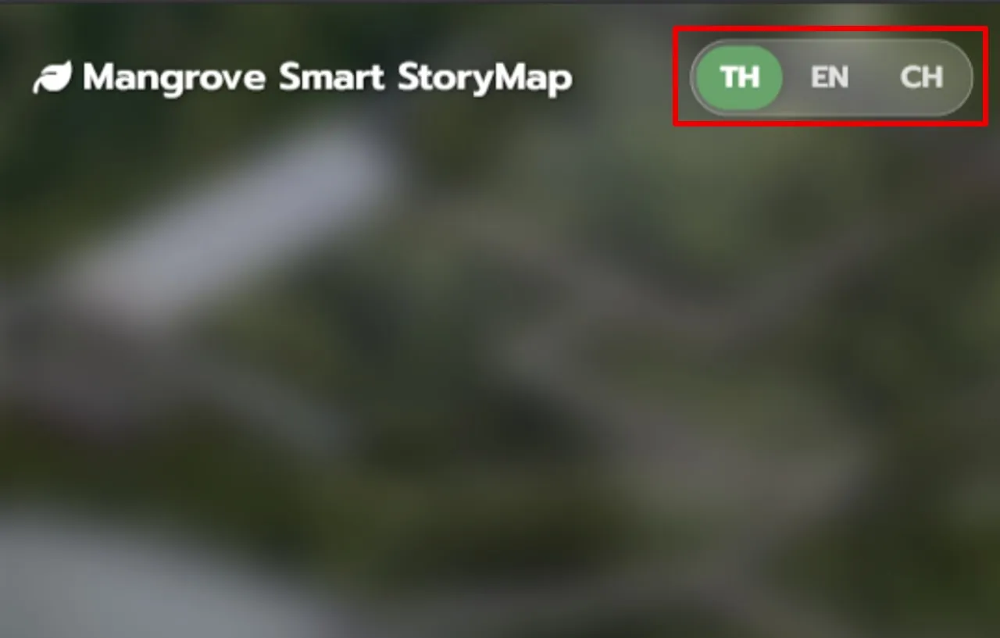
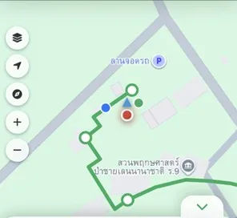
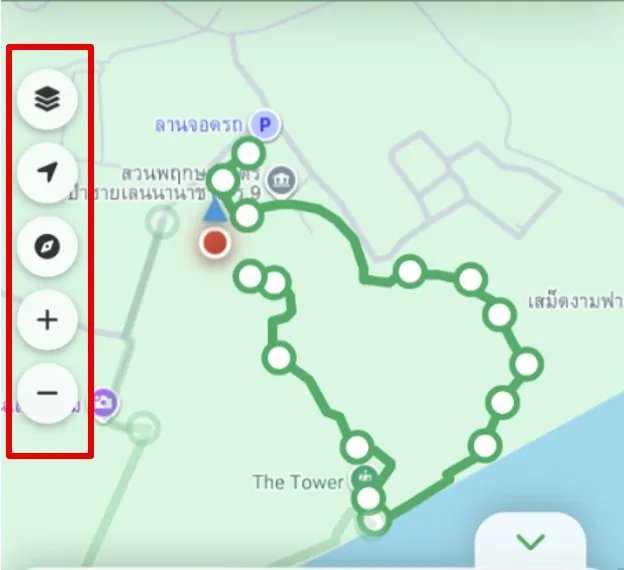

คู่มือการใช้งาน
ระบบแผนที่นำทางอัจฉริยะ
Mangrove Smart StoryMap
หน้าต่างแรกสำหรับต้อนรับนักท่องเที่ยวและแสดงภาพรวมของสถานที่
การเปลี่ยนภาษา
มุมขวาบนของหน้าจอ สามารถกดปุ่มเพื่อเลือกภาษาที่ต้องการใช้งานได้ 3 ภาษา ได้แก่ ภาษาไทย (TH), ภาษาอังกฤษ (EN), และภาษาจีน (CH)

ปุ่มเริ่มต้น
กดที่ปุ่ม "เริ่มต้นการเดินทางเลย" บริเวณกลางหน้าจอ เพื่อเข้าสู่หน้าแนะนำและเลือกเส้นทาง
ข้อมูลสถานที่
เลื่อนอ่านรายละเอียดเกี่ยวกับเส้นทางท่องเที่ยวเชิงนิเวศเบื้องต้น ซึ่งแบ่งออกเป็น เส้นทางสุขภาพ, เส้นทางสายมู, และจุดชมวิว สามารถกดเพื่อเข้าสู่หน้าแนะนำและเลือกเส้นทาง
หน้าต่างสำหรับดูสถิติและเลือกเส้นทางย่อยที่ต้องการเดินเดินทาง
แผนที่ภาพรวม
แผนที่แสดงเส้นทางเดินทั้งหมด เพื่อให้ผู้ใช้เห็นภาพรวมของพื้นที่ ซึ่งแผนที่สามารถเลื่อน ซูมเข้า-ออก และกดตรงจุดเพื่อดูรายละเอียดแต่ละจุดแวะพักบนเส้นทาง
สามารถกดปุ่มลูกศรเพื่อพับเก็บหรือกางแถบข้อมูลนี้ เพื่อเพิ่มพื้นที่ในการมองเห็นแผนที่
แผงสถิติรวม
เมื่อคลิกเลือกเส้นทาง ระบบจะแสดงข้อมูลสถิติที่คำนวณไว้ ดังนี้: ระยะทาง (km), เวลา (mins), การเผาผลาญ (kcal)
การ์ดหมวดหมู่เส้นทาง
แถบด้านล่างจะแสดงหมวดหมู่เส้นทางหลัก โดยสามารถเลื่อนเพื่อดูรายละเอียดแต่ละหมวดหมู่
เมื่อกดจะขยายรายละเอียดออก
รายละเอียดเส้นทางย่อย
ภายในกล่องการ์ดที่กางออก จะระบุจุดเด่นของเส้นทางนั้นๆ และสามารถกดเลือกดูเส้นทางย่อยที่ต้องการ
จุดแวะพักบนเส้นทาง
แสดงรายชื่อจุดแวะพักตามลำดับ พร้อมรูปภาพประกอบ ซึ่งสามารถกดที่รูปภาพเพื่อขยายดูขนาดเต็ม
ปุ่มยืนยันเส้นทาง
เมื่อตัดสินใจได้แล้ว ให้กดปุ่ม "เริ่มการเดินทาง" ด้านล่างสุดของการ์ด เพื่อเข้าหน้าแผนที่นำทาง
หน้าจอหลักสำหรับการนำทางระหว่างการเดินเดินทาง
แผนที่อินเทอร์แอคทีฟ
แสดงเส้นทางที่ต้องเดิน แสดงตำแหน่งปัจจุบันของผู้ใช้แบบเรียลไทม์ มีไอคอนจุดแวะพักต่างๆ บนแผนที่ สามารถเลื่อน ซูมเข้า-ออกแผนที่ และขยับย้ายตำแหน่งตัวแสดงตำแหน่งผู้ใช้

เครื่องมือควบคุมแผนที่
แถบปุ่มกดด้านซ้ายของหน้าจอซึ่งประกอบด้วย:
- เลเยอร์แผนที่: สลับรูปแบบการแสดงผลแผนที่
- ปุ่ม GPS: ดึงหน้าจอแผนที่กลับมายังตำแหน่งปัจจุบัน
- เข็มทิศ: เปิด/ปิด เข็มทิศบอกทิศทาง
- ปุ่ม +/-: ซูมเข้าและซูมออกแผนที่

หน้าต่างข้อมูลจุดแวะพัก
เมื่อเดินไปถึงหรือกดที่ไอคอนจุดแวะพักบนแผนที่ จะมีกล่องข้อความเด้งขึ้นมาแสดงข้อมูลสถานที่ และสามารถกดที่รูปภาพเพื่อขยายเต็มจอ
แถบข้อมูล
แสดงรายการจุดแวะพักทั้งหมดในเส้นทาง สามารถกดปุ่มลูกศรเพื่อพับเก็บหรือกางแถบข้อมูลนี้ เพื่อเพิ่มพื้นที่ในการมองเห็นแผนที่
ปุ่มอ่านข้อมูลเพิ่มเติม
สามารถกดได้จากทั้งในแถบเครื่องมือและในหน้าต่างข้อมูล จะเข้าสู่หน้าข้อมูลที่จะมีรายละเอียดต่างๆ ทั้ง ข้อมูล เรื่องเล่า กิจกรรมตามแต่ละจุดแวะพัก
ปุ่มเปลี่ยนเส้นทาง
สามารถกดที่ปุ่มเพื่อเปลี่ยนเป็นเส้นทางในหมวดอื่น
ถ้ากดซ้ำที่ปุ่มที่กำลังทำงาน จะทำการเปลี่ยนเป็นอีกเส้นทางในหมวดเดิม